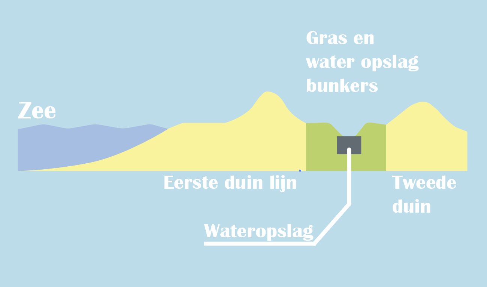

Aangezien het zeeniveau flink omhooggaat in de aankomende jaren, zijn we met een plan gekomen om de kust te beschermen tegen de zeewater invasie en onderweg paar andere kleinere problemen oplossen. Het project houdt in om de kust meer richting de zee uitbreiden. De kust zou ongeveer in totaal met 550 meter uitgebreid worden. De kust zou 50 meter van de geheel innemen, de rest 500 meter zou bestemd zijn voor nieuwe rij duinen en speciale water opslagsysteem.
De ruimte tussen de twee duin lijnen zou gebruikt worden om bunkers bouwen die in de wintermaanden neerslag gaan opvangen om een extra buffer te maken voor een potentiële droogte in de zomer. De opslagruimte heeft nog een andere bedoeling; in noodsituaties kan er vloedwater opgevangen worden. Door een nauwkeurig systeem van sluizen zou er alle water die over de eerste duin lijn gaat, zo snel mogelijk opgeslagen worden zodat het niet verder het land in zou gaan. Om te zorgen dat het gebied dat beschermd wordt door de WDOP-systeem, zou het langs de hele kust van Noord-Holland geïmplementeerd worden. De kust van Noord-Holland heeft een lengte van ongeveer 70km,
Doordat er steeds meer en meer 'grijz' (stenen en beton) binnen steden te vinden is, willen meer groen/natuur plaatsen in steden zodat de grote hoeveel heden neerslag in de winter zonder last kunnen worden opgenomen, waardoor je ook meteen het stedelijk hitte eiland effect tegengaat tijdens de zomer maanden. Een andere maatregel om neerslag probleem te tegengaan is zorgen dat het toegankelijker is voor burgers om regen opteslaan. Om te zorgen dat dit plan zichtbaar effect zou brengen hebben we paar maatregelen bedacht om het meeste uit te krijgen. Ook willen we investeren in mogelijkheden om neerslag op te slaan in dichtbebouwde steden of stad centras.
Uit een rapport van "Natuurenmilieu.nl" blijkt dat er afgelopen jaren een probleem van verstening aanwezig is. Dat betekent dat er niet genoeg groen in bepaalde gemeenten zich bevindt. De wijze waarop de onderzoek is gedaan kijkt of buurten aan de norm van 75m2 per woonadares zich voldoen. Er is een enorme daling gemeten van 24,2% in de 30 grootste gemeenten in Nederland. Als dit probleem behandeld wordt gaan we niet alleen meer genieten maar ook langer genieten van onze buurten.
Om te zorgen dat er meer groen in het openbaar en in de tuinen komt willen we de gemeenten bijtrekken en een programma samen met de overheid lanceren. Gemeenten met tekort aan groen krijgen subsidie zodat er meer planten in het openbaar komen. Ook willen we dat verschillende plekken waar er hoge concentratie beton of steen is, verandert worden zodat er meer natuur is. Bijvoorbeeld in heerhugowaard naast de bibliotheek en de gemeentehuis bevindt zich een grote plein van beton. Door paar bomen op het plein te planten zorgen we voor meer wateropslag tijdens witermaanden, minder hitte en meer ruimte met schaduw tijdens de zomermaanden. Ook is het belangrijk in gedachten te nemen dat meer groen in de omgeving zorgt voor betere mentale welzijn.
Nadat de probleem van te weinig groen en te veel steen binnen te stad "opgelost" is, gaan we nu zich meer focusen op het prive-sector. Na een korte wandeling door een buurt kan het vrij snel opvallen dat er voortuinen zijn met geen of bijna geen groen. Op het regionale schaal levert dit veel oppervalkte met gesteente Gemiddeld gekeken bestaan 46% tuinen in Nederland uit tegels. Als het lukt om dit percentage tenminste halveren tot 2050 en zo erg mogelijk verklijnen tot 2100 zou het prachtig zijn. Maar hoe moet dat?
Paar jaar terug had Nederland te maken met een grote droogte, veel boeren hadden geen water voor hun gewas. Iedereen moest erg zuinig zijn met het water gebruik. Om dit voorkomen willen we zorgen dat het opslaan van neerslag meer mogelijk wordt voor tuineigenaren.
Om dat te berijken willen we zorgen voor subsidies voor een aankoop regentonen. Elke tuinegenaar kan 300eu in totaal ontvangen om regentonen te kopen. Wanneer je zelf water kan opslaan, kan je het in de zomermaanden gebruiken om voor je tuin te zorgen. Dat is vooral handig bij extreme droogteperiodes die steeds vaker gaan voorkomen.
In wat grotere en dichtbebouwde steden kan het moeilijk zijn om meer groen te planten. Maar aslnog willen we zorgen dat de bewoners toegang krijgen om water op te slaan. Het water dat er opgeslaagd is kan dan verbonden worden met pijpleidingen zodat het gebruikt kan worden door de gemeente of het eigenaar van het aparatamentencomplex.
Alles wat er net genoemd was is niet per se makkelijk te weergeven op het kaart. Maar dat betekent niet dat het onmogelijk is. In de tabblad naast de kaart op het hoofdpagina komt meer informatie over het weergave van onze veranderingen.
Het is natuurlijk nooit mogelijk om een vloed volledig te voorkomen. Een relatief groote deel van Noord-Holland loop gevaar op overstromingen en in aankomende jaren gaat het percentage hoger worden. Er is een bepaalde grens aan wat er mogelijk gedaan kan worden om vloed tegen te gaan en de schade zo laag mogelijk houden. Daarom is het belangrijk om voor gebieden die hoge gevaar lopen op overstromingen een evacuatie plan op te richten.